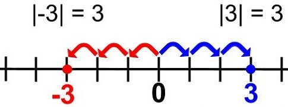

Επανάληψη βασικών Εννοιών
1) Ποιοι αριθμοί ονομάζονται ρητοί αριθμοί; Πως συμβολίζουμε το σύνολο των ρητών αριθμών;
Ρητοί αριθμοί είναι οι αριθμοί που μπορούμε να τους γράψουμε στη μορφή μ/ν ή -μ/ν όπου μ, ν είναι φυσικοί αριθμοί και ν διάφορος του μηδενός.Το σύνολο των ρητών αριθμών το συμβολίζουμε με το γράμμα Q.
2) Θετικοί – Αρνητικοί Ρητοί Αριθμοί
Οι ρητοί που έχουν πρόσημο ( + ) λέγονται θετικοί ενώ οι ρητοί που έχουν πρόσημο ( – ) λέγονται αρνητικοί. Στους θετικούς αριθμούς το πρόσημο ( + ) παραλείπεται ,ενώ αντίθετα στους αρνητικούς το πρόσημο ( – ) δεν παραλείπεται.
3) Τι ονομάζουμε άξονα ρητών αριθμών;
Μια ευθεία στην οποία έχουμε τοποθετήσει τους ακέραιους αριθμούς και τα θετικά και αρνητικά κλάσματα ονομάζουμε άξονα των ρητών.
4) Τι ονομάζεται απόλυτη τιμή ενός αριθμού α και τι παριστάνει αυτή πάνω σε άξονα;Να βρεθεί η απόλυτη τιμή των αριθμών: + 6, –6, – 1/2, 0
Η απόλυτη τιμή ενός αριθμού α, εκφράζει την απόσταση του σημείου που αντιστοιχεi στον αριθμό α πάνω στον άξονα, από την αρχή Ο του άξονα.
5) Σύγκριση Αριθμών
Μεταξύ δύο αριθμών, μεγαλύτερος είναι εκείνος που βρίσκεται δεξιότερα πάνω στον άξονα.
π.χ. +8 > +4 και +3 > –5
6) Ποιοι αριθμοί ονομάζονται αντίθετοι;
Να βρείτε ποιοι από τους παρακάτω αριθμούς είναι αντίθετοι: –3, – 1/3,+ 2 , + 3, – 2, 2/3.
Δύο αριθμοί με την ίδια απόλυτη τιμή και διαφορετικό πρόσημο ονομάζονται αντίθετοι αριθμοί.
Για παράδειγμα αντίθετοι είναι οι : –3 και +3 και οι +2 και –2
7) Ποιοι αριθμοί λέγονται ομόσημοι; Ποιοι αριθμοί λέγονται ετερόσημοι;
Ομόσημοι λέγονται οι αριθμοί που έχουν το ίδιο πρόσημο.Ετερόσημοι λέγονται οι αριθμοί που έχουν διαφορετικό πρόσημο.
8) Πως προσθέτουμε δύο ομόσημους και πως δύο ετερόσημους αριθμούς;
1. Για να προσθέσουμε δύο ομόσημους ρητούς αριθμούς, προσθέτουμε τις απόλυτες τιμές τους και στο αποτέλεσμα βάζουμε το κοινό τους πρόσημο.
2. Για να προσθέσουμε δύο ετερόσημους ρητούς αριθμούς, αφαιρούμε τη μικρότερη
απόλυτη τιμή από τη μεγαλύτερη και στο αποτέλεσμα βάζουμε το πρόσημο του
αριθμού με τη μεγαλύτερη απόλυτη τιμή.
9) Ποιες είναι οι ιδιότητες της πρόσθεσης;
1. Αντιμεταθετική ιδιότητα: α + β = β + α
π.χ. 2+3=3+2
2. Προσεταιριστική ιδιότητα: α + (β + γ) = (α + β) + γ
π.χ. (1+2)+3=1+(2+3)
10) Τι ονομάζουμε διαφορά δύο ρητών αριθμών α, β;
Αν α, β είναι δύο ρητοί αριθμοί, τότε ο ρητός αριθμός x που αν προστεθεί στο β μας
δίνει τον α ονομάζεται διαφορά του β από τον α.
Δηλαδή αν β + x = α τότε x = α – β.
Ουσιαστικά ισχύει α – β = α + (– β).
Ο αριθμός α ονομάζεται μειωτέος και ο β αφαιρεταίος.
11) Πως πολλαπλασιάζουμε δύο ομόσημους αριθμούς;
Να υπολογιστούν τα γινόμενα: (+2) · (+4) (–3) · (–2)
Για να πολλαπλασιάσουμε δύο ομόσημους αριθμούς, πολλαπλασιάζουμε τις απόλυτες τιμές τους και στο γινόμενο αυτό βάζουμε πρόσημο (+).
12) Πως πολλαπλασιάζουμε δύο ετερόσημους αριθμούς;
Για να πολλαπλασιάσουμε δύο ετερόσημους αριθμούς, πολλαπλασιάζουμε τις απόλυτες τιμές τους και στο γινόμενο αυτό βάζουμε το πρόσημο (–) .
13) Ποιες είναι οι ιδιότητες του πολλαπλασιασμού;

14) Ποιοι αριθμοί λέγονται αντίστροφοι;
Δύο αριθμοί που το γινόμενό τους ισούται με + 1λέγονται αντίστροφοι αριθμοί. Ο καθένας από αυτούς λέγεται αντίστροφος του άλλου.
15) Πως υπολογίζουμε το πηλίκο δύο αριθμών;
Για να διαιρέσουμε δύο αριθμούς, διαιρούμε τις απόλυτες τιμές τους και στο πηλίκο
αυτό βάζουμε:
Πρόσημο (+) αν είναι ομόσημοι.
Πρόσημο (–) αν είναι ετερόσημοι.
16) Γενικά ισχύουν για πολλαπλασιασμό και διαιρέσεις οι εξής κανόνες:
(+) · (+) = (+)
(+) / (+) = (+)
(-) · (-) = (+)
(-) / (-) = (+)
(+) · (-) = (-)
(+) / (-) = (-)
(-) · (+) = (-)
(-) / (+) = (-)
17) Τι ονομάζουμε νιοστή δύναμη ρητού αριθμού α με εκθέτη το φυσικό αριθμό ν;
Πως
συμβολίζεται η δύναμη αυτή;
Αν α είναι ένας οποιοσδήποτε ρητός αριθμός, το γινόμενο α · α · ... · α που έχει ν παράγοντες ίσους με α,λέγεται νιοστή δύναμη του α (ή δύναμη με βάση το α και εκθέτη ν). Συμβολικά γράφουμε αν και διαβάζουμε “άλφα στη νιοστή”.
18) Πότε μια δύναμη είναι θετική; Πότε μια δύναμη είναι αρνητική;
Εάν ο εκθέτης είναι άρτιος τότε η δύναμη είναι πάντα θετικός αριθμός.
Εάν η βάση είναι αρνητικός αριθμός και ο εκθέτης περιττός αριθμός η δύναμη είναι
αρνητικός αριθμός.
19) Ποιες είναι οι ιδιότητες των δυνάμεων;